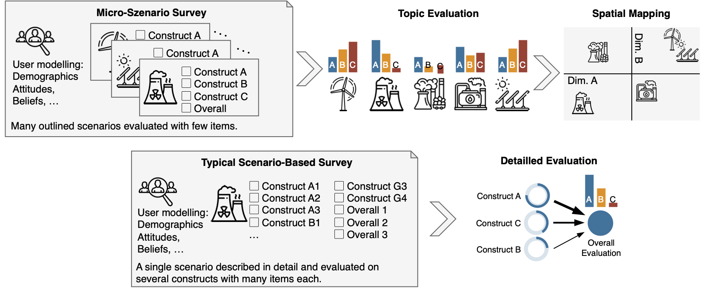
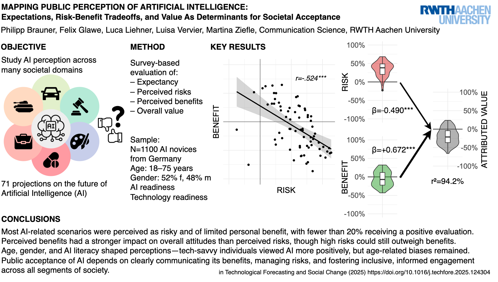

![]()
Introduction
The goal of the micro scenario approach is to gather the evaluation of a wide range of topics on few selected response variables and put the different evaluation into context. Hereto, the subjects are presented with a large number of different short scenarios and their evaluation of these is measured using a small set of response variables. The scenario presentation can be a short descriptive text, and/or images, or, in extreme cases, just a single word about an evaluated concept. We call the former “micro scenarios” and the latter “nano scenarios”. The former offers the possibility to briefly explain the evaluated topic whereas the later essentially measures the participants’ affective associations towards a single term.

Each of potentially many scenarios is evaluated on the same small set of response items (see Figure 1). Because participants evaluate several scenarios, we recommend using no more than three to five dependent variables With a suitable set of items as dependent variables, these evaluations provide three complementary research perspectives:
1. Individual differences: The responses can be interpreted as reflexive measurements of latent personality states or traits. In this sense, they represent between-subject variables (or “user variables”). Correlations with other user factors such as age, gender, or background characteristics can then be explored.
2. Topic evaluations: The responses also function as evaluations of the queried topics themselves. This perspective makes it possible to study differences and similarities between topics across the evaluation dimensions.
3. Grand mean or overall sentiment: Finally, the grand mean across topics and participants for each dimension can be understood as an overall evaluation of the topic field—an indicator of general sentiment.
For example, one might query perceived risk, perceived benefit, and overall value across a range of topics. The first perspective highlights how individuals weigh risks and benefits to form personal value judgments. The second perspective shows how risks and benefits are distributed across the different topics. These assessments can easily be mapped and visualized as accessible scatter plots. The third perspective captures how the entire topic field is perceived in terms of risks, benefits, and value.
Using easy-to-adapt R code this notebook demonstrates how studies using the micro scenario approach can be prepared, analysed and visualized. An additional page shows how the synthetic data for illustrating the analysis was created. Details on this approach, the methodological justifications, and addtional practical guidelines can be found in the following research article:
Brauner, Philipp (2024) Mapping acceptance: micro scenarios as a dual-perspective approach for assessing public opinion and individual differences in technology perception. Frontiers in Psychology 15:1419564. doi: 10.3389/fpsyg.2024.1419564
Real world example of applying Micro Scenarios
Figure 2 shows a graphical abstract from a refereed article that applied the micro scenario approach in the context of public risk–benefit perception of Artificial Intelligence. On an absolute level, Perceived Risks of AI across many applications are high, while Perceived Benefits and Perceived Value are comparatively low. However, a multiple linear regression suggests that overall Value can be explained (\(r^2 > .9\)) by Perceived Risks (\(\beta = .490\)) and, to an even larger extent, Perceived Benefits (\(\beta = .672\)). Individual differences further shape these perceptions.

Slides
If you prefer slides over websites, you can look at the english slidedeck on the appraoch here:
microscenarios_slides_2025.pdf
List of Studies
Several studies based on this approach have been published or are in the making. We document them here in Table 1, including the research context, sample size, number of topics queried, and the dependent variables. If you use this approach, let me know and I can add your study as well. Drop me a message!
Reference | Context | Topics | Sample Size | Dependents |
|---|---|---|---|---|
Artificial Intelligence | 71 | 1,100 | Expectancy, Risk, Benefit, Value | |
Sustainability and restraint | 45 | 108 | perceived climate effect, cost-benefit,perceived feasability | |
Various Technologies | 20 | 120 | Valence,Risk,Familiarity,Desire for Governance | |
Artificial Intelligence | 34 | 122 | Expectancy, Valence | |
Artificial Intelligence | 71 | 1,520 | Expectancy, Risk, Benefit, Value | |
Artificial Intelligence | 71 | 110 | Expectancy, Risk, Benefit, Value | |
Health technology | 20 | 193 | Risk, Benefit, Value |
This approach evolved over time and through several research projects. I would like to thank all those who have directly or indirectly, consciously or unconsciously, inspired me to take a closer look at this approach and who have given me the opportunity to apply this approach in various contexts. In particular, I would like to thank: Ralf Philipsen, without whom the very first study with that approach would never have happened, as we developed the crazy idea to explore the benefits of barriers of using “side-by-side” questions in Limesurvey. Julia Offermann, for indispensable discussions about this approach and so much encouragement and constructive comments during the last meters of the manuscript. Martina Ziefle for igniting scientific curiosity and motivating me to embark on a journey of boundless creativity and exploration. Felix Glawe, Luca Liehner, and Luisa Vervier for working on a study that took this concept to another level. Julian Hildebrandt for in-depth discussions on the approach and for validating the accompanying code. Tim Schmeckel for feedback on the draft of this article.
Throughout the process I received feedback from editors and reviewers that helped to question this approach and improve the foundation of this approach. No scientific method of the social sciences alone will fully answer all of our questions. I hope that this method provides a fresh perspective on exciting and relevant questions.
Funded by the Deutsche Forschungsgemeinschaft (DFG, German Research Foundation) under Germany’s Excellence Strategy – EXC- 2023 Internet of Production – 390621612.